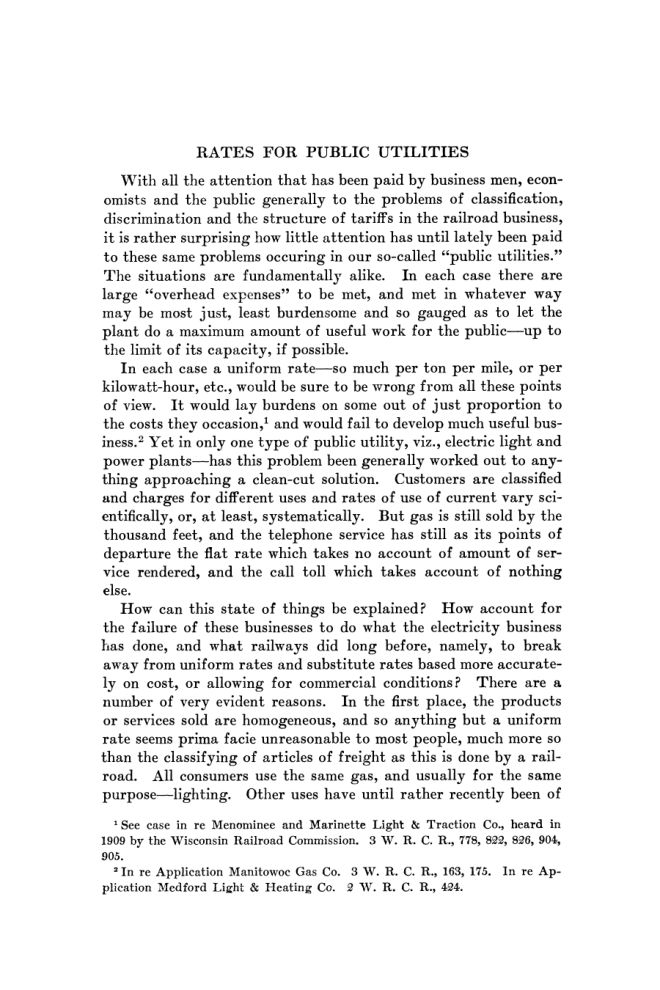

J. M. Clark, 1911: quem deve pagar pelo tamanho da usina?
Leitura: 8 min
Clark mostra por que tarifas uniformes erram em gás, eletricidade e telefone, defende cobrar pela responsabilidade no pico e propõe deixar a empresa lucrar por três anos com tarifas melhores.


Em 1911, observa J. Maurice Clark, o gás ainda se vendia por mil pés cúbicos, e o telefone oscilava entre a tarifa fixa, que não leva em conta quanto o assinante usa, e a cobrança por chamada, que não leva em conta mais nada. Só um tipo de serviço público, as usinas de eletricidade, tinha chegado a algo parecido com uma solução: classificava os consumidores e variava as tarifas de forma sistemática.
O problema era o mesmo das ferrovias, já muito estudado. Em ambos os casos há grandes despesas gerais a cobrir, de modo justo e de forma a levar a instalação ao máximo de trabalho útil. Uma tarifa uniforme, tanto por tonelada-milha quanto por quilowatt-hora, erraria em todos esses sentidos: sobrecarregaria uns além dos custos que causam e deixaria de desenvolver negócios úteis.
Por que a eletricidade saiu na frente?
Clark dá três razões. O gás é um produto homogêneo, usado quase sempre para a mesma coisa, a iluminação doméstica, e qualquer coisa além de uma tarifa uniforme parece injusta; a eletricidade serve a usos variados, em tensões diferentes. O tema não despertava o interesse vital das tarifas ferroviárias, que decidem quais cidades crescem. E o assunto é técnico, com palavras como carga ligada e fator de carga, o que o confina aos especialistas do setor.
Para H. L. Doherty, nada contribuiu tanto “para o sucesso do negócio elétrico quanto o estudo do problema das tarifas”. (“contributed so much to the success of the electrical business as the study of the rate problem”)
Quais são os princípios?
As ideias básicas, diz Clark, são duas: justiça e uso mais eficiente da instalação. A justiça pede que cada consumidor pague as despesas pelas quais é responsável. A eficiência dá uma regra parecida, em forma negativa. Se o consumidor pode ampliar o uso sem pagar o custo extra que causa, desperdiça, como o assinante de telefone com uso ilimitado. Se paga muitas vezes mais que esse custo, economiza demais, como o assinante que paga por chamada, e a central fica ociosa.
Daí duas regras. A primeira: o consumo adicional, além do mínimo que quase todos usariam, deve ser cobrado a uma taxa próxima do baixo custo direto, abaixo da média por unidade. A segunda, corolário da primeira: para desenvolver o uso da instalação até a capacidade plena, é legítimo cobrar o que o tráfego suporta, desde que o preço nunca fique abaixo do custo.
Quem paga pelo pico?
O tamanho da usina central é determinado pela maior demanda que pode ocorrer de uma vez, e não pela produção média. Saber quanto cada consumidor usava no momento exato do pico, digamos às cinco horas de uma tarde de dezembro, seria impossível. O que importa é a probabilidade futura de cada um pesar na capacidade, estimada por medidores de demanda, pela carga ligada de cada consumidor ou pela demanda máxima de cada classe.
A regra da responsabilidade no pico, porém, só vale se a usina opera perto da capacidade no pico. Se a instalação é maior que a demanda, a capacidade ociosa é desperdício, e qualquer novo consumidor que pague algo acima do custo extra de atendê-lo beneficia todos, mesmo pagando menos que os antigos. Clark descreve uma evolução em três fases: usina construída para uma demanda futura, com tarifa média alta e descontos legítimos; demanda crescente, com redução das tarifas mais altas; e capacidade plena, quando deve restar um sistema baseado no custo.
A prática do setor elétrico reduziu as despesas a três classes: as que variam com o número de consumidores, as que variam com a demanda máxima e as que variam com a energia consumida. A escolha da base importa. Nos cálculos de teste feitos para St. Louis, a repartição pela carga ligada dava às residências uma tarifa por quilowatt-hora mais de dez vezes maior que a do consumo municipal; pela participação real no pico, menos de três vezes maior.
O engenheiro-chefe da comissão de St. Louis defendia outra teoria, a do valor do serviço: cobrar pelo consumo, com concessões por conveniência, decididas por julgamento. Clark aceita a tese quando a usina tem folga, mas não quando opera no limite. Se a hora do pico fosse cobrada por toda a capacidade, os consumidores fugiriam dela até que, em vez de um pico, houvesse um planalto. Um sistema perfeito de custos seria, assim, também o mais conveniente.
Quanto à forma, o sistema lógico cobraria cada custo diretamente: uma soma fixa pelo consumidor, outra pela capacidade reservada e uma taxa uniforme pela energia. Os consumidores, porém, resistem a cobranças que parecem somar-se ao preço da energia, e a lei muitas vezes proíbe aluguel de medidor. Por isso se difundiu a tarifa em escalas: as primeiras horas de uso da demanda máxima pagam um preço alto, que cobre a capacidade, e o consumo além delas paga só o custo da energia.
Água e gás, mais simples, podem usar os mesmos métodos. O telefone é mais complicado. A rapidez e a precisão do serviço são exigidas sobretudo pelos assinantes comerciais, e a qualidade do serviço de um assinante melhora quando outros se conectam à rede, o que dá mais espaço a concessões pelo valor do serviço do que em qualquer outro setor.
Como premiar a empresa que melhora?
O estudo das tarifas leva, conclui Clark, à questão do lucro total. Se a regra de um retorno fixo sobre o investimento fosse aplicada com rigor o tempo todo, nenhuma empresa teria motivo para experimentar tarifas melhores: se a experiência desse certo, os consumidores ficariam com todo o ganho. E não cabe a uma comissão ordenar experiências. A saída é deixar a empresa lucrar mais quando melhora o serviço, em proporção ao benefício dos consumidores, e só por tempo limitado.
“Parece que três anos deveriam, na maioria dos casos, ser suficientes.” (“It would seem that three years should, in most cases, be sufficient.”)
Na minha leitura
Na minha leitura, Clark organiza o problema pela causa do custo: cada despesa deve ser associada à grandeza que a faz variar, número de consumidores, demanda máxima ou energia, e cobrada por essa grandeza. É a base do que hoje se chama tarifa binômia e tarifa de pico. O ponto mais fino é a condição que ele impõe: a responsabilidade no pico só se aplica com rigor quando a capacidade está esgotada. Com folga, preços diferenciados que cubram mais que o custo adicional beneficiam todos os consumidores.
A proposta final antecipa o problema dos incentivos na regulação. Um retorno garantido sobre o investimento elimina o risco e também o motivo para inovar; o prêmio temporário, de três anos, é uma forma de devolver à empresa uma parte do ganho que ela gera, sem perpetuar lucros extraordinários. A dificuldade, que Clark reconhece em parte, é medir o benefício do consumidor que justificaria o prêmio.
Glossário
- Despesas gerais (overhead)
- custos fixos da instalação, como juros, depreciação e impostos, que não variam com a quantidade vendida.
- Demanda de pico
- maior consumo simultâneo que a usina precisa atender; determina o tamanho da instalação.
- Carga ligada (connected load)
- capacidade total dos aparelhos de um consumidor, isto é, sua demanda máxima possível.
- Fator de carga
- relação entre o uso médio e a capacidade máxima de uma instalação.
- Medidor de demanda
- aparelho que registra o consumo máximo instantâneo de um cliente.
- Tarifa readiness to serve
- cobrança separada pela capacidade mantida à disposição do consumidor, além do preço da energia consumida.
- Cobrar o que o tráfego suporta
- fixar preços pelo valor do serviço para cada cliente, e não pelo custo, como faziam as ferrovias.
- Comissão de serviços públicos
- órgão estadual ou municipal que regula tarifas e serviços das empresas concessionárias, como a Wisconsin Railroad Commission.
Fontes
- Rates for Public Utilities — J. Maurice Clark (Amherst College) (pp. 473–487). JSTOR · Internet Archive (PDF)
- Edição completa, com os demais artigos: Nº 115 do Arquivo.
Documento em domínio público (EUA, publicado antes de 1931), via JSTOR Early Journal Content e Internet Archive. Resumo e comentário do autor deste site, sem afiliação com a American Economic Association. Encontrou um erro? Escreva: a correção é publicada no próprio texto, com data.
← Commons, 1911: os sindicatos são contra a eficiência? ↑ Nº 115 · Setembro de 1911: sindicatos, tarifas de serviços públicos e impostos